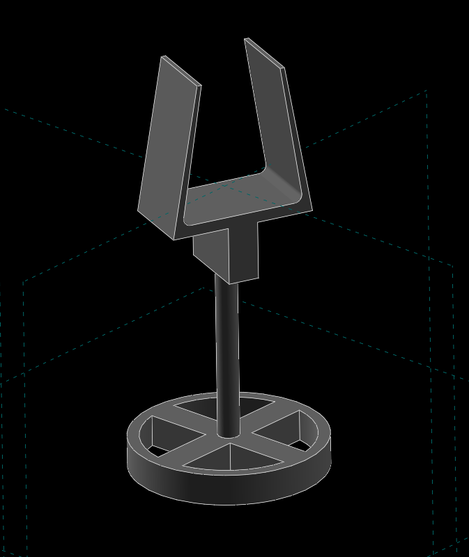
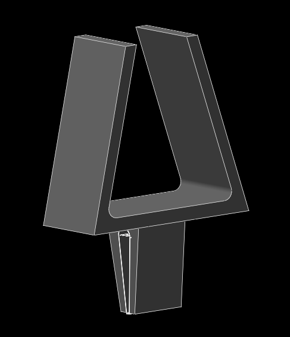

Ender-3 <<
Previous 手電筒架設計
在親自動手做之前，覺得這個通用設計好像不錯，但覺得高度過低，而且組立時還需要兩條皮筋，有點麻煩。
因為整體的小手電筒並沒有很重，繞 Z 軸旋轉的功能只要整座提起即可，至於上下旋轉，也不需要使用球接頭做那樣複雜。直接利用兩端的夾片夾住四方體 (圓形體應該也行)，就可以自由調整上下旋轉的角度。
3D 列印時儘量讓所有物件平攤在熱板上，速度調慢約八成，PLA 噴頭的溫度調到 205 度 C，讓 Ender-3 慢慢印，大約一個多小時就可以完成。
3D 零件繪圖是採用 Solvespace 完成，任何人覺得原始設計的尺寸需要修改，可自己來。

flashlight_stand.7z
延伸設計: 針對以下這種耳掛式 Led 燈架，使用第一次就將可提供轉換方向的扣件折斷，於是利用上面的夾持架進行修改後，可改為頭戴式 Led。
耳掛式 Led 燈:

可上下夾持的燈架設計:

head_light_top_clip.7z
後記: 這種靠夾持力固定手電筒的設計，就 PLA 列印件，使用一陣子之後，會因為彈性疲乏而無法穩固夾持，必須設法使用其他設計方法。
Ender-3 <<
Previous